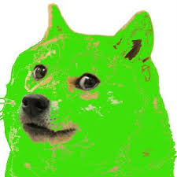

Challenges
What's up, it is another Lab on how to correctly create your CSS files for a webpage. Still learning my way around how to correctly format my CSS file. Doing ok so far. Not really going to use images as this focuses mainly on text than anything else.
Problems
It's another lab, which means that problems have come with this new knowledge. Nothing too hard, but still things to be careful of. Gotta keep an eye out for mislabeling, mislinking, and making sure that everything links up correctly.
Results
Another webpage created using the techniques that I learned in class. Fresh content has been now revealed to the public. Fresh stuff. Soon, I will know everything. This is a copy of Lab 10 to explore a diffrent area of spice.
